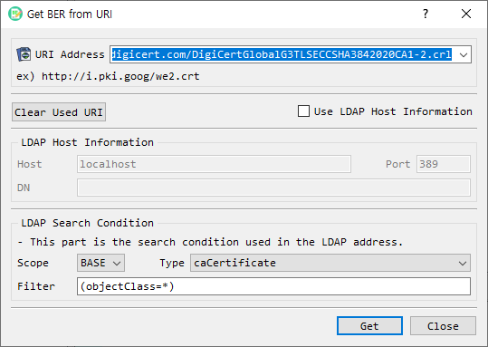

Get BER from URI Dialog Guide
The Get BER from URI dialog retrieves BER-encoded data from an HTTP(S) or LDAP address and loads the result into the main BerEditor window for decoding. Open it from Tool > Get BER from URI.

Figure 1. Get BER from URI dialog. Enter an HTTP(S) or LDAP address, or enable LDAP Host Information to supply LDAP connection and search details separately.
Screen Areas
- URI Address — Enter or select an address. Recent addresses are available from the drop-down list. The dialog accepts
http,https, andldapschemes. - Example — Shows an example certificate URL.
- Clear Used URI — Removes the saved recent URI list.
- Use LDAP Host Information — Switches from a full URI to separately entered LDAP connection details. When enabled, the URI field is disabled and the LDAP Host Information group is enabled.
- LDAP Host Information — Enter the LDAP server Host, Port, and search DN. The host and port are retained as settings for later use.
- LDAP Search Condition — Supplies LDAP search options: Scope, certificate Type, and Filter. The default filter is
(objectClass=*). - Get — Retrieves data from the selected address and asks BerEditor to decode the returned data.
- Close — Closes the dialog.
Retrieve Data from an HTTP(S) URI
- Leave Use LDAP Host Information unchecked.
- Enter or select an
http://orhttps://address in URI Address. - Select Get.
- If retrieval succeeds, BerEditor decodes the returned data in the main window and displays a success message.
The address can also be selected from the recent URI list. Successfully used addresses are saved in that list. Clear Used URI removes the saved list.
Retrieve Data from LDAP
You can provide LDAP details in either of these ways:
Use an LDAP URI
- Leave Use LDAP Host Information unchecked.
- Enter an
ldap://URI that identifies the LDAP server and search location. - Set the search Type and Filter if needed.
- Select Get.
The dialog reads the server, DN, scope, filter, and requested attribute from the LDAP URI when those values are present. The selected Type and filter field are used as defaults where the URI does not specify them.
Enter LDAP Host Information Separately
- Select Use LDAP Host Information.
- Enter the LDAP server Host, Port, and DN.
- Choose a Scope, Type, and Filter.
- Select Get.
The current implementation provides the BASE scope. Available certificate types are caCertificate, signCertificate, userCertificate, certificateRevocationList, autorithRevocationList, deltaRevocationList, and certificateTrustList.
Troubleshooting
- Enter an address before selecting Get. The dialog reports an error when the URI is empty or uses an unsupported scheme.
- For LDAP host mode, provide a DN. Check the host, port, and server availability if connection or bind errors appear.
- If retrieval fails, BerEditor reports the retrieval error in a warning or log message.
- Retrieved data is passed to the main BER decoder. If the server returns data that is not valid BER, decoding may fail even when the network request succeeds.